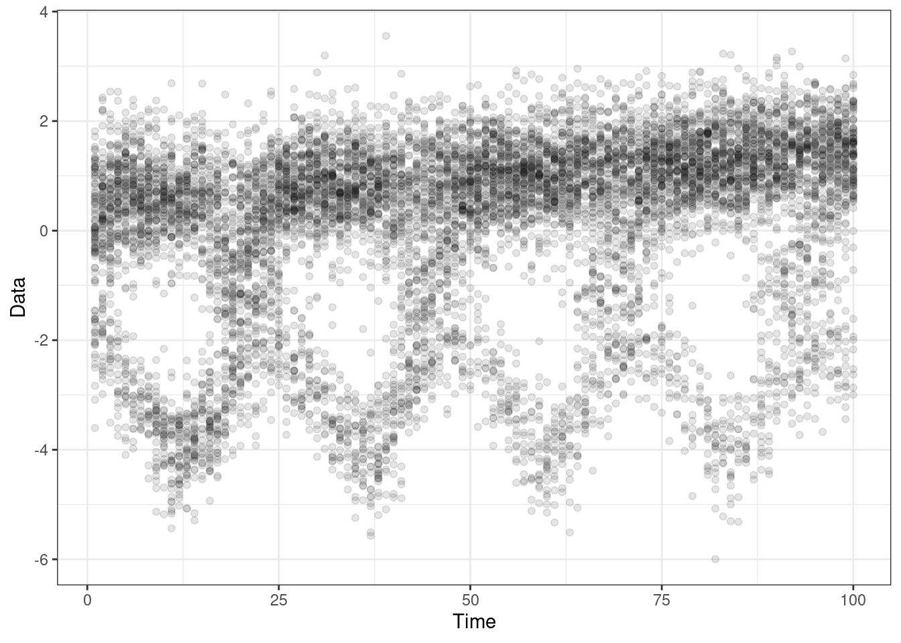

11 Tuning the regularization parameters for flowtrend
We’re going to take a (huge) leap, and assume the flowtrend() function has been
built. We need to build up quite a few functions before we’re able to do
cross-validation. These include:
- Predicting out-of-sample, using
predict_flowtrend(). - Evaluating data fit (by likelihood) in an out-of-sample measurement, using
objective(..., unpenalized = TRUE). - Numerically estimating the maximum regularization values to test, using
get_max_lambda(). - Making data splits, using
make_cv_folds().
11.1 Predicting and evaluating on new time points
First, let’s write a couple of functions interpolate_mn() and
interpolate_prob() which linearly interpolate the means and probabilities at
new time points.
#' Do a linear interpolation of the cluster means.
#'
#' @param x Training times.
#' @param tt Prediction time.
#' @param iclust Cluster number.
#' @param mn length(x) by dimdat by numclust matrix.
#'
#' @return A dimdat-length vector.
interpolate_mn <- function(x, tt, iclust, mn){
## Basic checks
stopifnot(length(x) == dim(mn)[1])
stopifnot(iclust <= dim(mn)[3])
if(tt %in% x) return(mn[which(x==tt),,iclust,drop=TRUE])
## Set up for linear interpolation
floor_t <- max(x[which(x <= tt)])
ceiling_t <- min(x[which(x >= tt)])
floor_t_ind <- which(x == floor_t)
ceiling_t_ind <- which(x == ceiling_t)
## Do the linear interpolation
mn_t <-
mn[ceiling_t_ind,,iclust,drop=TRUE]*(tt - floor_t)/(ceiling_t - floor_t) +
mn[floor_t_ind,,iclust,drop=TRUE]*(ceiling_t - tt)/(ceiling_t - floor_t)
## Basic checks
stopifnot(length(mn_t) == dim(mn)[2])
return(mn_t)
}#' Do a linear interpolation of the cluster means.
#'
#' @param x Training times.
#' @param tt Prediction time.
#' @param iclust Cluster number.
#' @param prob length(x) by numclust array or matrix.
#'
#' @return One probability.
interpolate_prob <- function(x, tt, iclust, prob){
## Basic checks
numdat = dim(prob)[1]
numclust = dim(prob)[2]
stopifnot(length(x) == numdat)
stopifnot(iclust <= numclust)
if(tt %in% x) return(prob[which(x == tt),iclust,drop=TRUE])
## Set up for linear interpolation
floor_t <- max(x[which(x <= tt)])
ceiling_t <- min(x[which(x >= tt)])
floor_t_ind <- which(x == floor_t)
ceiling_t_ind <- which(x == ceiling_t)
## Do the linear interpolation
prob_t <-
prob[ceiling_t_ind,iclust,drop=TRUE]*(tt - floor_t)/(ceiling_t - floor_t) +
prob[floor_t_ind,iclust,drop=TRUE]*(ceiling_t - tt)/(ceiling_t - floor_t) # linear interpolation between floor_t and ceiling_t
## Basic checks
stopifnot(length(prob_t) == 1)
stopifnot(0 <= prob_t & prob_t <= 1)
return(prob_t)
}Next, let’s build a prediction function predict_flowtrend() which takes the
model object obj, and the new time points newtimes, and produces.
#' Prediction: Given new timepoints in the original time interval,generate a set
#' of means and probs (and return the same Sigma).
#'
#' @param obj Object returned from covariate EM flowtrend().
#' @param newtimes New times at which to make predictions.
#'
#' @return List containing mean, prob, and sigma, and x.
#'
#' @export
#'
predict_flowtrend <- function(obj, newtimes = NULL){
## Check the dimensions
newx <- newtimes
if(is.null(newtimes)){ newx = obj$x }
## Check if the new times are within the time range of the original data
stopifnot(all(sapply(newx, FUN = function(t) t >= min(obj$x) & t <= max(obj$x))))
## Setup some things
x <- obj$x
TT_new = length(newx)
numclust = obj$numclust
dimdat = obj$dimdat
## Predict the means (manually).
newmn_array = array(NA, dim = c(TT_new, dimdat, numclust))
for(iclust in 1:numclust){
newmn_oneclust <- lapply(newx, function(tt){
interpolate_mn(x, tt, iclust, obj$mn)
}) %>% do.call(rbind, . )
newmn_array[,,iclust] = newmn_oneclust
}
## Predict the probs.
newprob = array(NA, dim = c(TT_new, numclust))
for(iclust in 1:numclust){
newprob_oneclust <- lapply(newx, function(tt){
interpolate_prob(x, tt, iclust, obj$prob)
}) %>% do.call(c, .)
newprob[,iclust] = newprob_oneclust
}
## Basic checks
stopifnot(all(dim(newprob) == c(TT_new,numclust)))
stopifnot(all(newprob >= 0))
stopifnot(all(newprob <= 1))
## Return the predictions
return(list(mn = newmn_array,
prob = newprob,
sigma = obj$sigma,
x = newx))
}Here’s a quick test (no new data) to make sure this function returns a list containing: the mean, probability, covariance, and new times.
testthat::test_that("The prediction function returns the right things", {
## Generate data
set.seed(100)
dt <- gendat_1d(100, rep(100, 100))
ylist = dt %>% dt2ylist()
x = dt %>% pull(time) %>% unique()
obj <- flowtrend(ylist = ylist,
x = x,
maxdev = 5,
numclust = 3,
lambda = 0.02,
l = 1,
l_prob = 2,
lambda_prob = .005, ##
nrestart = 1,
niter = 3)
predobj = predict_flowtrend(obj)
testthat::expect_named(predobj, c("mn", "prob", "sigma", "x"))
})Now, we try to make predictions at new held-out time points held_out=25:35,
from a model that is estimated without those time points.
## Generate data
set.seed(100)
dt <- gendat_1d(100, rep(100, 100))
dt_model <- gendat_1d(100, rep(100, 100), return_model = TRUE)
held_out = 25:35
dt_subset = dt %>% subset(time %ni% held_out)
ylist = dt_subset %>% dt2ylist()
x = dt_subset %>% pull(time) %>% unique()
obj <- flowtrend(ylist = ylist,
x = x,
maxdev = 5,
numclust = 3,
lambda = 0.02,
l = 1,
l_prob = 2,
lambda_prob = .005, ##
nrestart = 1)
## Also reorder the cluster labels of the truth, to match the fitted model.
ord = obj$mn[,1,] %>% colSums() %>% order(decreasing=TRUE)
lookup <- setNames(c(1:obj$numclust), ord)
dt_model$cluster = lookup[as.numeric(dt_model$cluster)] %>% as.factor()
## Reorder the cluster labels of the fitted model.
obj = reorder_clust(obj)
testthat::test_that("prediction function returns the right things", {
predobj = predict_flowtrend(obj, newtimes = held_out)
## Check a few things
testthat::expect_equal(predobj$x, held_out)
testthat::expect_equal(rowSums(predobj$prob), rep(1, length(held_out)))
testthat::expect_equal(dim(predobj$mn), c(length(held_out), 1, 3))
})Plot the predicted means \(\mu\) and probabilities \(\pi\), with purple points at the interpolated means. We can see that it works as expected.
predobj = predict_flowtrend(obj, newtimes = held_out)
g = plot_1d(ylist, obj, x = x) +
geom_line(aes(x = time, y = mean, group = cluster),
data = dt_model,## %>% subset(time %ni% held_out),
linetype = "dashed", size=2, alpha = .7)
## Plot the predicted means
preds = lapply(1:3, function(iclust){
tibble(mn = predobj$mn %>% .[,,iclust, drop = TRUE],
prob = predobj$prob %>% .[,iclust, drop = TRUE],
time = held_out,
cluster = iclust)
}) %>% bind_rows()
g + geom_line(aes(x=time, y=mn, group = cluster), data = preds, col = 'yellow', size = 2)##, alpha = .8) The estimated probabilities are shown here, with purple points showing the interpolation. It works as expected.
plot_prob(obj, x=x) +
geom_line(aes(x = time, y = prob, group = cluster, color = cluster),
data = dt_model, linetype = "dashed") +
facet_wrap(~cluster) +
geom_line(aes(x = time, y = prob), data = preds, col = 'yellow', size = 3)Let’s now try to space inputs unevenly, by x.
set.seed(100)
dt <- gendat_1d(1000, rep(100, 1000))
dt_model <- gendat_1d(1000, rep(100, 1000), return_model = TRUE)
## held_out = 25:35
## dt_subset = dt %>% subset(time %ni% held_out)
ylist_orig = dt %>% dt2ylist()
## x = dt %>% pull(time) %>% unique()
## x = runif(min = 1, max = 100, n = 100) %>% sort()
x = sample(1:1000, 100) %>% sort()
ylist = ylist_orig[x]
obj <- flowtrend(ylist = ylist,
x = x,
maxdev = 5,
numclust = 3,
lambda = 0.02,
l = 1,
l_prob = 2,
lambda_prob = .005, ##
nrestart = 1)
## Also reorder the cluster labels of the truth, to match the fitted model.
ord = obj$mn[,1,] %>% colSums() %>% order(decreasing=TRUE)
lookup <- setNames(c(1:obj$numclust), ord)
dt_model$cluster = lookup[as.numeric(dt_model$cluster)] %>% as.factor()
## Reorder the cluster lables of the fitted model.
obj = reorder_clust(obj)
## Make mean predictions
newtimes = seq(from=min(x),to=max(x),length=10000)
predobj = predict_flowtrend(obj, newtimes = newtimes)
## Plot the predicted means
preds = lapply(1:3, function(iclust){
tibble(mn = predobj$mn %>% .[,,iclust, drop = TRUE],
prob = predobj$prob %>% .[,iclust, drop = TRUE],
time = newtimes,
cluster = iclust)
}) %>% bind_rows() The estimated means \(\mu\) in the training data are shown as solid triangle points. The out-of-sample \(\mu\) predictions made on a fine grid of time points (shown by the yellow lines) look fine.
g = plot_1d(ylist, obj, x = x, add_point = FALSE)
g + ggtitle("Fitted model")
g + geom_line(aes(x=time, y=mn, group = cluster), data = preds, col = 'yellow', size = rel(1), alpha = .7) + ggtitle("Predictions on fine grid of times") The out-of-sample \(\pi\) predictions are the lines that connect the points. They look great as well.
plot_prob(obj, x=x) +
geom_line(aes(x = time, y = prob, group = cluster, color = cluster),
data = dt_model, linetype = "dashed") +
facet_wrap(~cluster)
## geom_line(aes(x = time, y = prob), data = preds, col = 'yellow', size = rel(1), alpha = .7)Next, we’ll try evaluating an estimated model’s prediction in an out-of-sample measurement. This will be measured by the model prediction’s out-of-sample objective (negative log-likelihood).
## Generate data
set.seed(100)
dt <- gendat_1d(100, rep(100, 100), die_off_time = 0.45)
dt_model <- gendat_1d(100, rep(100, 100), die_off_time = 0.45, return_model = TRUE)
held_out = 25:35
dt_subset = dt %>% subset(time %ni% held_out)
ylist = dt_subset %>% dt2ylist()
x = dt_subset %>% pull(time) %>% unique()
obj <- flowtrend(ylist = ylist,
x = x,
maxdev = 5,
numclust = 3,
lambda = 0.02,
l = 1,
l_prob = 2,
lambda_prob = .005, ##
nrestart = 5)
## Make prediction
predobj = predict_flowtrend(obj, newtimes = held_out)
## Use the predicted (interpolated) model parameters
obj_pred = objective(mu = predobj$mn, prob = predobj$prob, sigma = predobj$sigma, ylist = ylist[held_out],
unpenalized = TRUE)
truemn = array(NA, dim = dim(predobj$mn))
truemn[,1,] =
dt_model %>% select(time, cluster, mean) %>%
pivot_wider(names_from = cluster, values_from = mean) %>% subset(time %in% held_out) %>%
select(-time) %>% as.matrix()
## Use the true mean
obj_better = objective(mu = truemn, prob = predobj$prob, sigma = predobj$sigma, ylist = ylist[held_out],
unpenalized = TRUE)
## Here is the estimated model
plot_1d(ylist, obj, x= (1:100)[-held_out], add_point = FALSE)The out-of-sample prediction is similar for the predicted model and the estimated model. Below, we’re showing just the predicted means at the held-out points, overlaid with data.
(This is measured by the objective (= negative log likelihood), so lower is better! Red is worse than black, naturally.)
{r fit, fig.width = 7, fig.height = 5}) g = plot_1d(ylist = dt %>% subset(time %in% held_out) %>% dt2ylist(), x= held_out) + xlim(c(0,100)) g + geom_line(aes(x=time, y = value, group = name), data = data.frame(truemn[,1,]) %>% add_column(time = held_out) %>% pivot_longer(-time)) + geom_line(aes(x=time, y = value, group = name), data = data.frame(predobj$mn[,1,]) %>% add_column(time = held_out) %>% pivot_longer(-time), col = 'red') + ggtitle(paste0(round(obj_pred,3), " (red, predicted) vs. ", round(obj_better, 3), "(black, truth)"))
11.2 Maximum \((\lambda_\mu, \lambda_\pi)\) values to test
What should the maximum value of regularization parameters to use? It’s useful to be able to calculate the smallest value of regularization parameters that result in fully flat \(\mu\) and \(\pi\) over time, in all clusters. Call these \(\lambda_\mu^{\text{max}}\) and \(\lambda_{\pi}^{\text{max}}\). We use these to form a 2d grid of candidate \(\lambda\) values – logarithmically-spaced pairs of values between starting at \((\lambda_{\mu}^{\text{max}}, \lambda_{\pi}^{\text{max}})\) decreasing to some small pair of values.
The function get_max_lambda() numerically estimates this maximum pair
\((\lambda_{\mu}^{\text{max}}, \lambda_{\pi}^{\text{max}})\). It proceeds by first
running flowtrend() on a very large pair \((\lambda_\mu, \lambda_\pi)\), then
sequentially halving both values while checking if the resulting estimated \(\mu\)
and \(\pi\) are all flat over time. As soon as they cease to be flat, we stop
and take the immediately previous pair of values of \((\lambda_\mu, \lambda_\pi)\).
get_max_lambda() is a wrapper around the workhorse calc_max_lambda(). It
obtains the value and saves it to a maxres_file (which defaults to
maxres.Rdata) in the destin directory.
#' A wrapper for \code{calc_max_lambda}. Saves the two maximum lambda values in
#' a file.
#'
#' @param destin Where to save the output (A two-lengthed list called
#' "maxres").
#' @param maxres_file Filename for output. Defaults to maxres.Rdata.
#' @param ... Additional arguments to \code{flowtrend()}.
#' @inheritParams calc_max_lambda
#'
#' @return No return
#'
#' @export
get_max_lambda <- function(destin, maxres_file = "maxres.Rdata",
ylist,
countslist,
numclust,
maxdev,
max_lambda_mean,
max_lambda_prob,
...){
if(file.exists(file.path(destin, maxres_file))){
load(file.path(destin, maxres_file))
cat("Maximum regularization values are loaded.", fill=TRUE)
return(maxres)
} else {
print(Sys.time())
cat("Maximum regularization values being calculated.", fill = TRUE)
cat("with initial lambda values (prob and mu):", fill = TRUE)
print(c(max_lambda_prob, max_lambda_mean));
maxres = calc_max_lambda(ylist = ylist,
countslist = countslist,
numclust = numclust,
maxdev = maxdev,
## This function's settings
max_lambda_prob = max_lambda_prob,
max_lambda_mean = max_lambda_mean,
...)
save(maxres, file = file.path(destin, maxres_file))
cat("file was written to ", file.path(destin, maxres_file), fill=TRUE)
cat("maximum regularization value calculation done.", fill = TRUE)
print(Sys.time())
return(maxres)
}
}The aforementioned workhorse calc_max_lambda() is here.
#' Estimate maximum lambda values numerically. First starts with a large
#' initial value \code{max_lambda_mean} and \code{max_lambda_prob}, and runs
#' the EM algorithm on decreasing set of values (sequentially halved). This
#' stops once you see non-flat probabilities or means, and returns the *smallest*
#' regularization (lambda) value pair that gives full sparsity.
#'
#' Note that the \code{zero_stabilize=TRUE} option is used in
#' \code{flowtrend()}, which basically means the EM algorithm runs only until
#' the zero pattern stabilizes.
#'
#' @param ylist List of responses.
#' @param numclust Number of clusters.
#' @param max_lambda_mean Defaults to 4000.
#' @param max_lambda_prob Defaults to 1000.
#' @param iimax Maximum value of x for 2^{-x} factors to try.
#' @param ... Other arguments to \code{flowtrend_once()}.
#'
#' @return list containing the two maximum values to use.
#'
#' @export
calc_max_lambda <- function(ylist, countslist = NULL, numclust,
max_lambda_mean = 4000,
max_lambda_prob = 1000,
verbose = FALSE,
iimax = 16,
...){
## Basic setup
dimdat = ncol(ylist[[1]])
toler_by_dim = sapply(1:dimdat, function(idim){
datrange = ylist %>% sapply(FUN = function(y) y %>% .[,idim] %>% range()) %>% range()
toler = (datrange[2] - datrange[1]) / (100 * length(ylist))
})
toler_prob = 0.01 / length(ylist)
## Get range of regularization parameters.
facs = sapply(1:iimax, function(ii) 2^(-ii+1)) ## DECREASING order
print("running the models once")
for(ii in 1:iimax){
cat("###############################################################", fill=TRUE)
cat("#### lambda_prob = ", max_lambda_prob * facs[ii],
" and lambda = ", max_lambda_mean * facs[ii], "being tested. ", fill=TRUE)
cat("###############################################################", fill=TRUE)
res = flowtrend_once(ylist = ylist,
countslist = countslist,
numclust = numclust,
lambda_prob = max_lambda_prob * facs[ii],
lambda = max_lambda_mean * facs[ii],
verbose = verbose, ...)
## In each dimension, the data should only vary by a relatively small amount (say 1/100)
mean_is_flat = sapply(1:dimdat, FUN = function(idim){
all(abs(diff(res$mn[,idim,])) < toler_by_dim[idim]) })
prob_is_flat = all(abs(diff(res$prob)) < toler_prob)
all_are_flat = (all(mean_is_flat) & prob_is_flat)
if(!all_are_flat){
## If there are *any* nonzero values at the first iter, prompt a restart
## with higher initial lambda values.
if(ii == 1){
browser()
stop(paste0("Max lambdas: ", max_lambda_mean, " and ", max_lambda_prob,
" were too small as maximum reg. values. Go up and try again!!"))
## If there are *any* nonzero values, return the immediately preceding
## lambda values -- these were the smallest values we had found that gives
## full sparsity.
} else {
## Check one more time whether the model was actually zero, by fully running it;
res = flowtrend_once(ylist = ylist,
countslist = countslist,
numclust = numclust,
lambda_prob = max_lambda_prob * facs[ii],
lambda = max_lambda_mean * facs[ii],
...)
## Check if both curves are basically flat
mean_is_flat = sapply(1:res$dimdat, FUN = function(idim){
all(abs(diff(res$mn[,idim,])) < toler_by_dim[idim]) })
prob_is_flat = all(abs(diff(res$prob)) < toler_prob)
all_are_flat = (all(mean_is_flat) & prob_is_flat)
## If there are *any* nonzero values, stop.
## (Otherwise, just proceed to try a smaller set of lambdas.)
if(!all_are_flat){
return(list(mean = max_lambda_mean * facs[ii-1],
prob = max_lambda_prob * facs[ii-1]))
}
}
}
cat(fill=TRUE)
}
}11.3 Define CV data folds
make_cv_folds() makes the cross-validation “folds”, which are the \(K\)
(nfold) list of data indices. These are not times! They simply split of
1:length(ylist).
#' Define the time folds cross-validation.
#'
#' @param nfold Number of folds.
#' @return List of fold indices.
#' @export
#'
make_cv_folds <- function(ylist=NULL, nfold, TT=NULL){
## Make hour-long index list
if(is.null(TT)) TT = length(ylist)
folds <- rep(1:nfold, ceiling( (TT-2)/nfold))[1:(TT-2)]
inds <- lapply(1:nfold, FUN = function(k) (2:(TT-1))[folds == k])
names(inds) = paste0("Fold", 1:nfold)
return(inds)
} We can visualize how the data is to be split. In the following plot, vertical
lines mark data indices in each fold, using different colors . For nfold = 5,
the first fold is every 5th point starting at 2, \(\{2,7,\dots\}\), and the second
fold is \(\{3,8,\dots\}\), and so forth.
Note: the first index \(1\) and the last \(TT\) are left out at this stage, and
instead made available to all folds at training time (in
cv_flowtrend()). This is because, otherwise, it would be impossible to make
predictions at either ends of the data.
nfold = 5
TT = 100
inds = make_cv_folds(nfold = nfold, TT = TT)
print(inds)
plot(NA, xlim = c(0,TT), ylim=1:2, ylab = "", xlab = "Data index of ylist", yaxt = "n", xaxt="n")
axis(1, at = c(1, seq(10, 100,10)))
for(ifold in 1:nfold){
abline(v = inds[[ifold]], col = ifold, lwd = 2)
}## $Fold1
## [1] 2 7 12 17 22 27 32 37 42 47 52 57 62 67 72 77 82 87 92 97
##
## $Fold2
## [1] 3 8 13 18 23 28 33 38 43 48 53 58 63 68 73 78 83 88 93 98
##
## $Fold3
## [1] 4 9 14 19 24 29 34 39 44 49 54 59 64 69 74 79 84 89 94 99
##
## $Fold4
## [1] 5 10 15 20 25 30 35 40 45 50 55 60 65 70 75 80 85 90 95
##
## $Fold5
## [1] 6 11 16 21 26 31 36 41 46 51 56 61 66 71 76 81 86 91 96
11.4 CV = many single jobs
Next, we build the immediate elements needed for cross-validation.
There are two applications of flowtrend() on data for cross-validation; one
is when estimating models from held-in data folds, and the other is when
re-estimating models on the full data.
Estimating models on the held-in data is done by one_job(). Re-estimating
models on the entire dataset is done by one_job_refit().
Here is one_job().
#' Helper function to run ONE job for CV, in iprob, imu, ifold, irestart.
#'
#' @param iprob Index for prob.
#' @param imu Index for beta.
#' @param ifold Index for CV folds.
#' @param irestart Index for 1 through nrestart.
#' @param folds CV folds (from \code{make_cv_folds()}).
#' @param destin Destination directory.
#' @param lambda_means List of regularization parameters for mean model.
#' @param lambda_probs List of regularization parameters for prob model.
#' @param ylist Data.
#' @param countslist Counts or biomass.
#' @param ... Rest of arguments for \code{flowtrend_once()}.
#'
#' @return Nothing is returned. Instead, a file named "1-1-1-1-cvscore.Rdata"
#' is saved in \code{destin}. (The indices here are iprob-imu-ifold-irestart).
#'
#' @export
one_job <- function(iprob, imu, ifold, irestart, folds, destin,
lambda_means, lambda_probs,
seedtab = NULL,
## The rest that is needed explicitly for flowtrend()
ylist, countslist,
l, l_prob,
...){
## Get the train/test data
TT <- length(ylist)
test.inds = unlist(folds[ifold])
test.dat = ylist[test.inds]
test.count = countslist[test.inds]
train.inds = c(1, unlist(folds[-ifold]), TT)
train.dat = ylist[train.inds]
train.count = countslist[train.inds]
## Check whether this job has been done already.
filename = make_cvscore_filename(iprob, imu, ifold, irestart)
if(file.exists(file.path(destin, filename))){
cat(filename, "already done", fill=TRUE)
return(NULL)
}
## Get the seed ready
if(!is.null(seedtab)){
seed = seedtab %>%
dplyr::filter(iprob == !!iprob,
imu == !!imu,
ifold == !!ifold,
irestart == !!irestart) %>%
dplyr::select(seed1, seed2, seed3, seed4, seed5, seed6, seed7) %>% unlist() %>% as.integer()
} else {
seed = NULL
}
lambda_prob = lambda_probs[iprob]
lambda_mean = lambda_means[imu]
## Run the algorithm (all this trouble because of |nrestart|)
args = list(...)
args$ylist = train.dat
args$countslist = train.count
args$x = train.inds
args$lambda = lambda_mean
args$lambda_prob = lambda_prob
args$l = l
args$l_prob = l_prob
args$seed = seed
if("nrestart" %in% names(args)){
args = args[-which(names(args) %in% "nrestart")] ## remove |nrestart| prior to feeding to flowtrend_once().
}
tryCatch({
## Estimate model
argn <- lapply(names(args), as.name)
names(argn) <- names(args)
call <- as.call(c(list(as.name("flowtrend")), argn))
res.train = eval(call, args)
## Assign mn and prob
pred = predict_flowtrend(res.train, newtimes = test.inds)
stopifnot(all(pred$prob >= 0))
## Build Dl
##
## Evaluate on test data, by calculating objective (penalized likelihood with penalty parameters set to 0)
cvscore = objective(mu = pred$mn,
prob = pred$prob,
sigma = pred$sigma,
ylist = test.dat,
countslist = test.count,
unpenalized = TRUE)
## Dl = diag(rep(1, length(test.count))), ## TODO: what is wrong here?
## lambda_prob = 0,
## lambda = 0)
## prob = res.train$prob,
## beta = res.train$beta)
## Store (temporarily) the run times
time_per_iter = res.train$time_per_iter
final_iter = res.train$final.iter
total_time = res.train$total_time
## Store the results.
mn = res.train$mn
prob = res.train$prob
objectives = res.train$objectives
## Save the CV results
save(cvscore,
## Time
time_per_iter,
final_iter,
total_time,
## Results
lambda_mean,
lambda_prob,
lambda_means,
lambda_probs,
mn,
prob,
objectives,
## Save the file
file = file.path(destin, filename))
return(NULL)
}, error = function(err) {
err$message = paste(err$message,
"\n(No file will be saved for lambdas (",
signif(lambda_probs[iprob],3), ", ", signif(lambda_means[imu],3),
") whose indices are: ",
iprob, "-", imu, "-", ifold, "-", irestart,
" .)",sep="")
cat(err$message, fill=TRUE)
warning(err)})
}Here is one_job_refit().
#' Refit model for one pair of regularization parameter values. Saves to
#' \code{nrestart} files named like "1-4-3-fit.Rdata", for
#' "(iprob)-(imu)-(irestart)-fit.Rdata".
#'
#' (Note, \code{nrestart} is not an input to this function.)
#'
#' @inheritParams one_job
#'
#' @export
one_job_refit <- function(iprob, imu, destin,
lambda_means, lambda_probs,
l, l_prob,
seedtab = NULL,
## The rest that is needed explicitly for flowtrend_once()
ylist, countslist,
...){
args = list(...)
nrestart = args$nrestart
assertthat::assert_that(!is.null(nrestart))
for(irestart in 1:nrestart){
## Writing file
filename = make_refit_filename(iprob = iprob, imu = imu, irestart = irestart)
if(file.exists(file.path(destin, filename))){
cat(filename, "already done", fill=TRUE)
next
} else {
## Get the seed ready
if(!is.null(seedtab)){
ifold = 0
seed = seedtab %>%
dplyr::filter(iprob == !!iprob,
imu == !!imu,
ifold == !!ifold,
irestart == !!irestart) %>%
dplyr::select(seed1, seed2, seed3, seed4, seed5, seed6, seed7) %>% unlist() %>% as.integer()
} else {
seed = NULL
}
## Get the fitted results on the entire data
args = list(...)
args$ylist = ylist
args$countslist = countslist
args$lambda_prob = lambda_probs[iprob]
args$lambda = lambda_means[imu]
args$l = l
args$l_prob = l_prob
args$seed = seed
if("nrestart" %in% names(args)) args = args[-which(names(args) %in% "nrestart")] ## remove |nrestart| prior to feeding
## Call the function.
argn <- lapply(names(args), as.name)
names(argn) <- names(args)
call <- as.call(c(list(as.name("flowtrend_once")), argn))
res = eval(call, args)
## Save the results
cat("Saving file here:", file.path(destin, filename), fill=TRUE)
save(res, file=file.path(destin, filename))
}
}
}Since cross-validation entails running many jobs, we need to index individual “jobs” carefully. Here are some more helpers for indexing:
make_iimat(): Make a table whose rows index each “job”(iprob, imu, ifold, irestart), to be used byone_job().make_iimat_small(): Make a table whose rows index each(iprob, imu, irestart)for re-estimating models, to be used byone_job_refit().
#' Indices for the cross validation jobs.
#'
#' The resulting iimat looks like this:
#'
#' ind iprob imu ifold irestart
#' 55 6 1 2 1
#' 56 7 1 2 1
#' 57 1 2 2 1
#' 58 2 2 2 1
#' 59 3 2 2 1
#' 60 4 2 2 1
#' @param cv_gridsize CV grid size.
#' @param nfold Number of CV folds.
#' @param nrestart Number of random restarts of EM algorithm.
#'
#' @return Integer matrix.
#'
#' @export
make_iimat <- function(cv_gridsize, nfold, nrestart){
iimat = expand.grid(iprob = 1:cv_gridsize,
imu = 1:cv_gridsize,
ifold = 1:nfold,
irestart = 1:nrestart)
iimat = cbind(ind = as.numeric(rownames(iimat)), iimat)
return(iimat)
}
#' 2d indices for the cross validation jobs.
#'
#' The resulting iimat looks like this:
#' (#, iprob, imu, irestart)
#' 1, 1, 1, 1
#' 2, 1, 2, 1
#' 3, 1, 3, 1
#'
#' @inheritParams make_iimat
#'
#' @return Integer matrix.
#'
#' @export
make_iimat_small <- function(cv_gridsize, nrestart){
iimat = expand.grid(iprob = 1:cv_gridsize,
imu = 1:cv_gridsize,
irestart = 1:nrestart)
iimat = cbind(ind = as.numeric(rownames(iimat)), iimat)
return(iimat)
}Let’s see the integer matrices that these functions make.
make_iimat(cv_gridsize = 5, nfold = 5, nrestart = 10) %>% head()
make_iimat_small(cv_gridsize = 5, nrestart = 10) %>% head()## ind iprob imu ifold irestart
## 1 1 1 1 1 1
## 2 2 2 1 1 1
## 3 3 3 1 1 1
## 4 4 4 1 1 1
## 5 5 5 1 1 1
## 6 6 1 2 1 1## ind iprob imu irestart
## 1 1 1 1 1
## 2 2 2 1 1
## 3 3 3 1 1
## 4 4 4 1 1
## 5 5 5 1 1
## 6 6 1 2 1Next, the functions make_cvscore_filename() and make_refit_filename() are
used to form the names of the numerous output files.
#' Create file name (a string) for cross-validation results.
#' @param iprob
#' @param imu
#' @param ifold
#' @param irestart
#'
#' @export
make_cvscore_filename <- function(iprob, imu, ifold, irestart){
filename = paste0(iprob, "-", imu, "-", ifold, "-", irestart, "-cvscore.Rdata")
return(filename)
}
#' Create file name (a string) for cross-validation results.
#' @param iprob
#' @param imu
#' @param ifold
#' @param irestart
#'
#' @export
make_best_cvscore_filename <- function(iprob, imu, ifold){
filename = paste0(iprob, "-", imu, "-", ifold, "-best-cvscore.Rdata")
return(filename)
}
#' Create file name (a string) for re-estimated models for the lambda values
#' indexed by \code{iprob} and \code{imu}.
#' @param iprob
#' @param imu
#' @param irestart
#'
#' @export
make_refit_filename <- function(iprob, imu, irestart){
filename = paste0(iprob, "-", imu, "-", irestart, "-fit.Rdata")
return(filename)
}
#' Create file name (a string) for re-estimated models for the lambda values
#' indexed by \code{iprob} and \code{imu}.
#' @param iprob
#' @param imu
#'
#' @export
make_best_refit_filename <- function(iprob, imu){
filename = paste0(iprob, "-", imu, "-best-fit.Rdata")
return(filename)
}Here’s a useful helper logspace(max, min) to make logarithmically spaced set
of numbers, given min and max. We can use this to make a grid of lambda
pairs to be used for cross-validation.
#' Helper function to logarithmically space out R. \code{length} values linear
#' on the log scale from \code{max} down to \code{min}.
#'
#' @param max Maximum value.
#' @param min Minimum value.
#' @param length Length of the output string.
#' @param min.ratio Factor to multiply to \code{max}.
#'
#' @return Log spaced
#'
#' @export
logspace <- function(max, min=NULL, length, min.ratio = 1E-4){
if(is.null(min)) min = max * min.ratio
vec = 10^seq(log10(min), log10(max), length = length)
stopifnot(abs(vec[length(vec)] - max) < 1E10)
return(vec)
}11.5 Running cross-validation
Putting the helpers all together, you get the main user-facing function
cv_flowtrend().
#' Cross-validation for flowtrend(). Saves results to separate files in
#' \code{destin}.
#'
#' @param destin Directory where output files are saved.
#' @param nfold Number of cross-validation folds. Defaults to 5.
#' @param nrestart Number of repetitions.
#' @param save_meta If TRUE, save meta data.
#' @param lambda_means Regularization parameters for means.
#' @param lambda_probs Regularization parameters for probs.
#' @param folds Manually provide CV folds (list of time points of data to use
#' as CV folds). Defaults to NULL.
#' @param mc.cores Use this many CPU cores.
#' @param blocksize Contiguous time blocks from which to form CV time folds.
#' @param refit If TRUE, estimate the model on the full data, for each pair of
#' regularization parameters.
#' @param ... Additional arguments to flowtrend().
#' @inheritParams flowtrend_once
#'
#' @return No return.
#'
#' @export
cv_flowtrend <- function(## Data
ylist,
countslist,
## Define the locations to save the CV.
destin = ".",
## Regularization parameter values
lambda_means,
lambda_probs,
l,
l_prob,
iimat = NULL,
## Other settings
maxdev,
numclust,
nfold,
nrestart,
verbose = FALSE,
refit = FALSE,
save_meta = FALSE,
mc.cores = 1,
folds = NULL,
seedtab = NULL,
...){
## Basic checks
stopifnot(length(lambda_probs) == length(lambda_means))
cv_gridsize = length(lambda_means)
## There's an option to input one's own iimat matrix.
if(is.null(iimat)){
## Make an index of all jobs
if(!refit) iimat = make_iimat(cv_gridsize, nfold, nrestart)
if(refit) iimat = make_iimat_small(cv_gridsize, nrestart)
}
## Define the CV folds
## folds = make_cv_folds(ylist = ylist, nfold = nfold, blocksize = 1)
if(is.null(folds)){
folds = make_cv_folds(ylist = ylist, nfold = nfold)
} else {
stopifnot(length(folds) == nfold)
}
## Save meta information, once.
if(save_meta){
if(!refit){
save(folds,
nfold,
nrestart, ## Added recently
cv_gridsize,
lambda_means,
lambda_probs,
ylist, countslist,
## Save the file
file = file.path(destin, 'meta.Rdata'))
print(paste0("wrote meta data to ", file.path(destin, 'meta.Rdata')))
}
}
## Run the EM algorithm many times, for each value of (iprob, imu, ifold, irestart)
start.time = Sys.time()
parallel::mclapply(1:nrow(iimat), function(ii){
print_progress(ii, nrow(iimat), "Jobs (EM replicates) assigned on this computer", start.time = start.time)
if(!refit){
iprob = iimat[ii,"iprob"]
imu = iimat[ii,"imu"]
ifold = iimat[ii,"ifold"]
irestart = iimat[ii,"irestart"]
## if(verbose) cat('(iprob, imu, ifold, irestart)=', c(iprob, imu, ifold, irestart), fill=TRUE)
} else {
iprob = iimat[ii, "iprob"]
imu = iimat[ii, "imu"]
ifold = 0
}
if(!refit){
one_job(iprob = iprob,
imu = imu,
l = l,
l_prob = l_prob,
ifold = ifold,
irestart = irestart,
folds = folds,
destin = destin,
lambda_means = lambda_means,
lambda_probs = lambda_probs,
## Arguments for flowtrend()
ylist = ylist, countslist = countslist,
## Additional arguments for flowtrend().
numclust = numclust,
maxdev = maxdev,
verbose = FALSE,
seedtab = seedtab)
} else {
one_job_refit(iprob = iprob,
imu = imu,
l = l,
l_prob = l_prob,
destin = destin,
lambda_means = lambda_means,
lambda_probs = lambda_probs,
## Arguments to flowtrend()
ylist = ylist, countslist = countslist,
## Additional arguments for flowtrend().
numclust = numclust,
maxdev = maxdev,
nrestart = nrestart,
verbose = FALSE,
seedtab = seedtab)
}
return(NULL)
}, mc.cores = mc.cores)
}11.6 Summarizing the output
Once the cross-validation is finished (and saved into many files called e.g.
1-1-1-1-cvscore.Rdata or 1-1-1-fit.Rdata), we can use cv_summary() to
summarize the results.
If you look closely, you’ll notice that cv_aggregate() is the workhorse.
#' Main function for summarizing the cross-validation results.
#'
#' @inheritParams cv_flowtrend
#' @param save If TRUE, save to \code{file.path(destin, filename)}.
#' @param filename File name to save to.
#'
#' @return List containing summarized results from cross-validation. Here are
#' some objects in this list: \code{bestres} is the the overall best model
#' chosen from the cross-validation; \code{cvscoremat} is a 2d matrix of CV
#' scores from all pairs of regularization parameters; \code{bestreslist} is a
#' list of all the best models (out of \code{nrestart} EM replications) from the
#' each pair of lambda values. If \code{isTRUE(save)}, nothing is returned.
#'
#' @export
cv_summary <- function(destin = ".",
save = FALSE,
filename = "summary.RDS"
){
## Load data
load(file = file.path(destin, 'meta.Rdata'), verbose = FALSE)
## This loads all the necessary things: nrestart, nfold, cv_gridsize
stopifnot(exists("nrestart"))
stopifnot(exists("nfold"))
stopifnot(exists("cv_gridsize"))
## Get the results of the cross-validation.
a = cv_aggregate(destin)
cvscore.mat = a$cvscore.mat
min.inds = a$min.inds
## Get results from refitting
bestreslist = cv_aggregate_res(destin = destin)
bestres = bestreslist[[paste0(min.inds[1] , "-", min.inds[2])]]
if(is.null(bestres)){
if(min.inds[1]==2 & min.inds[2]==3) browser()
stop(paste0("The model with lambda indices (",
min.inds[1], ",", min.inds[2], ") is not available."))
}
out = list(bestres = bestres,
cvscore.mat = cvscore.mat,
min.inds = min.inds,
## List of all best models for all lambda pairs.
bestreslist = bestreslist,
destin = destin)
if(save){ saveRDS(out, file=file.path(destin, filename))}
return(out)
}#' From the results saved in \code{destin}, aggregate all |nrestart| files to retain only the "best" restart, and delete the rest.
#'
#' All meta information (|nfold|, |cv_gridsize|, |nrestart|, |lambda_means|, |lambda_probs|) comes from \code{meta.Rdata}.
#'
#' @param destin Directory with cross-validation output.
#'
#' @export
cv_makebest <- function(destin){
## ## Read the meta data (for |nfold|, |cv_gridsize|, |nrestart|, |lambda_means|, |lambda_probs|)
load(file = file.path(destin, 'meta.Rdata'), verbose = FALSE)
## This loads all the necessary things; just double-checking.
stopifnot(exists("nrestart"))
stopifnot(exists("nfold"))
stopifnot(exists("cv_gridsize"))
stopifnot(exists(c("lambda_probs")))
stopifnot(exists(c("lambda_means")))
## Aggregate the results
cvscore.array = array(NA, dim = c(cv_gridsize, cv_gridsize, nfold, nrestart))
cvscore.mat = matrix(NA, nrow = cv_gridsize, ncol = cv_gridsize)
for(iprob in 1:cv_gridsize){
for(imu in 1:cv_gridsize){
for(ifold in 1:nfold){
## If the "best" flowtrend object has already been created, do nothing.
best_filename = make_best_cvscore_filename(iprob, imu, ifold)
if(file.exists(file.path(destin, best_filename))){
next
## Otherwise, attempt to load from all |nrestart| replicates
} else {
objectives = load_all_objectives(destin, iprob, imu, ifold, nrestart)
## If all |nrestart| files exist, delete all files but the best model.
if(all(!is.na(objectives))){
best_irestart = which(objectives == min(objectives))
keep_only_best(destin, iprob, imu, ifold, nrestart, best_irestart)
}
else {
browser()
print(paste0("iprob=", iprob, " imu=", imu, " ifold=", ifold, " had objectives: ", objectives))
}
}
}
}
}
## Also go over the "refit" files
for(iprob in 1:cv_gridsize){
for(imu in 1:cv_gridsize){
## If the "best" flowtrend object has already been created, do nothing.
best_filename = make_best_refit_filename(iprob, imu)
if(file.exists(file.path(destin, best_filename))){
next
## Otherwise, attempt to load from all |nrestart| replicates
} else {
objectives = load_all_refit_objectives(destin=destin, iprob=iprob, imu=imu, nrestart=nrestart)
if(all(!is.na(objectives))){
best_irestart = which(objectives == min(objectives))
keep_only_best_refit(destin, iprob, imu, nrestart, best_irestart)
} else {
print(paste0("iprob=", iprob, " imu=", imu, " had /refit/ objectives: ", objectives))
}
}
}
}
}
#' Loading all objectives, with NA's for missing files
load_all_objectives <- function(destin, iprob, imu, ifold, nrestart){
objectives = sapply(1:nrestart, function(irestart){
filename = make_cvscore_filename(iprob, imu, ifold, irestart)
tryCatch({
load(file.path(destin, filename), verbose = FALSE)
return(objectives[length(objectives)])
}, error = function(e){ NA })
})
return(objectives)
}
#' Loading all objectives, with NA's for missing files
load_all_refit_objectives <- function(destin, iprob, imu, ifold, nrestart){
objectives = sapply(1:nrestart, function(irestart){
filename = make_best_cvscore_filename(iprob, imu, ifold)
tryCatch({
load(file.path(destin, filename), verbose = FALSE)
return(objectives[length(objectives)])
}, error = function(e){ NA })
})
return(objectives)
}
#' Keeping only the output files for the "best" restart, and deleting the rest.
keep_only_best <- function(destin, iprob, imu, ifold, nrestart, best_irestart){
for(irestart in 1:nrestart){
filename = make_cvscore_filename(iprob, imu, ifold, irestart)
if(irestart == best_irestart){
best_filename = make_best_cvscore_filename(iprob, imu, ifold)
file.rename(from = file.path(destin, filename),
to = file.path(destin, best_filename))
} else {
file.remove(file.path(destin, filename))
}
}
}
#' Keeping only the output files (among refit models) for the "best" restart,
#' and deleting the rest.
keep_only_best_refit <- function(destin, iprob, imu, nrestart, best_irestart){
for(irestart in 1:nrestart){
filename = make_refit_filename(iprob, imu, irestart)
if(irestart == best_irestart){
best_filename = make_best_refit_filename(iprob, imu)
file.rename(from = file.path(destin, filename),
to = file.path(destin, best_filename))
} else {
file.remove(file.path(destin, filename))
}
}
}#' Aggregate CV scores from the results, saved in \code{destin}.
#'
#' @param destin Directory with cross-validation output.
#'
#' @export
cv_aggregate <- function(destin){
## ## Read the meta data (for |nfold|, |cv_gridsize|, |nrestart|, |lambda_means|,
## ## |lambda_probs|)
load(file = file.path(destin, 'meta.Rdata'), verbose = FALSE)
## This loads all the necessary things; just double-checking.
stopifnot(exists("nrestart"))
stopifnot(exists("nfold"))
stopifnot(exists("cv_gridsize"))
stopifnot(exists(c("lambda_probs")))
stopifnot(exists(c("lambda_means")))
## Aggregate the results
cvscore.array = array(NA, dim = c(cv_gridsize, cv_gridsize, nfold, nrestart))
cvscore.mat = matrix(NA, nrow = cv_gridsize, ncol = cv_gridsize)
for(iprob in 1:cv_gridsize){
for(imu in 1:cv_gridsize){
obj = matrix(NA, nrow=nfold, ncol=nrestart)
for(ifold in 1:nfold){
## If the "best" flowtrend object has already been created, use it.
best_filename = make_best_cvscore_filename(iprob, imu, ifold)
if(file.exists(file.path(destin, best_filename))){
load(file.path(destin, best_filename), verbose = FALSE)
cvscore.array[iprob, imu, ifold, 1] = cvscore
obj[ifold, 1] = objectives[length(objectives)]
## Otherwise, aggregate directly from the individual files
} else {
for(irestart in 1:nrestart){
filename = make_cvscore_filename(iprob, imu, ifold, irestart)
tryCatch({
load(file.path(destin, filename), verbose = FALSE)
cvscore.array[iprob, imu, ifold, irestart] = cvscore
obj[ifold, irestart] = objectives[length(objectives)]
}, error = function(e){})
}
}
}
## Pick out the CV scores with the *best* (lowest) objective value
cvscores = cvscore.array[iprob, imu , , ]
best.models = apply(obj, 1, function(myrow){
ind = which(myrow == min(myrow, na.rm=TRUE))
if(length(ind)>1) ind = ind[1] ## Just choose one, if there is a tie.
return(ind)
})
final.cvscores = sapply(1:nfold, function(ifold){
cvscores[ifold, best.models[ifold]] ## Why did we get rid of this?
## cvscores[ifold]
})
cvscore.mat[iprob, imu] = mean(final.cvscores)
}
}
## Clean a bit
cvscore.mat[which(is.nan(cvscore.mat), arr.ind = TRUE)] = NA
## ## Read the meta data (for |nfold|, |cv_gridsize|, |nrestart|)
rownames(cvscore.mat) = signif(lambda_probs,3)
colnames(cvscore.mat) = signif(lambda_means,3)
## Find the minimum
mat = cvscore.mat
min.inds = which(mat == min(mat, na.rm = TRUE), arr.ind = TRUE)
## Return the results
out = list(cvscore.array = cvscore.array,
cvscore.mat = cvscore.mat,
lambda_means = lambda_means,
lambda_probs = lambda_probs,
min.inds = min.inds)
return(out)
}#' Helper to aggregate CV results and obtain the |res| object, all saved in
#' |destin|.
#'
#' @inheritParams cv_aggregate
#'
#' @return List containing, for every (iprob, imu), the "best" estimated model
#' out of the |nrestart| replicates (best in the sense that it had the best
#' likelihood value out of the |nrestart| replicates.)
cv_aggregate_res <- function(destin){
load(file.path(destin, "meta.Rdata"))
## df.mat = matrix(NA, ncol=cv_gridsize, nrow=cv_gridsize)
res.list = list()
for(iprob in 1:cv_gridsize){
for(imu in 1:cv_gridsize){
## If the "best" object has already been created, use it.
best_refit_filename = make_best_refit_filename(iprob, imu)
if(file.exists(file.path(destin, best_refit_filename))){
load(file.path(destin, best_refit_filename), verbose = FALSE)
bestres = res
## Otherwise, aggregate directly from the individual files
} else {
obj = rep(NA, nrestart)
res.list.inner = list()
for(irestart in 1:nrestart){
filename = make_refit_filename(iprob, imu, irestart)
tryCatch({
load(file.path(destin, filename))
res.list.inner[[irestart]] = res
obj[irestart] = res$objectives[length(res$objectives)]
}, error = function(e){ NULL })
}
if(!all(is.na(obj))){
bestres = res.list.inner[[which.min(obj)]] ## which.min?
}
}
## Add the "best" object to a list.
res.list[[paste0(iprob, "-", imu)]] = bestres
}
}
return(res.list)
}
11.7 CV on your own computer
Using all this functionality, we’d like to be able to cross-validate on our own
laptop, using cv_flowtrend().
Let’s try it out.
litr::load_all("~/repos/flowtrend/index.Rmd")
library(tidyverse)
cv_gridsize = 3
l = 1
l_prob = 1
set.seed(332)
ylist = gendat_1d(10, rep(100,10)) %>% dt2ylist()
plot_1d(ylist)
folds = make_cv_folds(lapply(1:100, function(ii) cbind(runif(10))), nfold = 5, TT = length(ylist)) ## What is this doing? FISHY
lambda_means = lambda_probs = logspace(min = 1E-5, max = 1, length = cv_gridsize)
for(refit in c(FALSE, TRUE)){
cv_flowtrend(ylist = ylist, countslist = NULL,
destin = "~/repos/flowtrend/inst/output/test",
lambda_means = lambda_means,
lambda_probs = lambda_probs,
l = l, l_prob = l_prob,
maxdev = NULL, numclust = 3, nfold = 3, nrestart = 3,
niter = 3,
verbose = TRUE, refit = refit, save_meta = TRUE, mc.cores = 6)
}Once all jobs are run, use cv_makebest() to go over all the output, and (1)
retain the best model out of the 5 replicates (random restarts), and (2) delete
4 of the the 5 replicates.
## Clean the output directory to keep only the "best" results
cv_makebest(destin = "~/repos/flowtrend/inst/output/test")
## Plot the final result
obj = cv_summary(destin = "~/repos/flowtrend/inst/output/test")
plot_1d(ylist, obj$bestres, add_point=FALSE)Okay, now we know it’s possible to run on (say) a laptop. A more realistic application would go something like this:
litr::load_all("~/repos/flowtrend/index.Rmd")
get_max_lambda("~/repos/flowtrend/inst/output/test",
maxres_file = "maxres.Rdata",
ylist,
countslist = NULL,
numclust = 3,
maxdev = 1,
max_lambda_prob = 3000000,
max_lambda_mean = 3000000,
verbose = TRUE,
l = 1, l_prob = 1)
load("maxres.Rdata", verbose = TRUE) ## Loads "maxres" object
lambda_means = logspace(max = maxres$means, length = 5)
lambda_probs = logspace(max = maxres$prob, length = 5)
for(refit in c(FALSE, TRUE)){
cv_flowtrend(ylist = ylist,
countslist = NULL,
destin = "~/repos/flowtrend/tempoutput",
lambda_means = lambda_means,
lambda_probs = lambda_probs,
l = 2,
l_prob = 1,
maxdev = 2,
numclust = 3,
nfold = 5,
nrestart = 5,
verbose = TRUE,
refit = refit,
save_meta = TRUE,
mc.cores = 6)
}